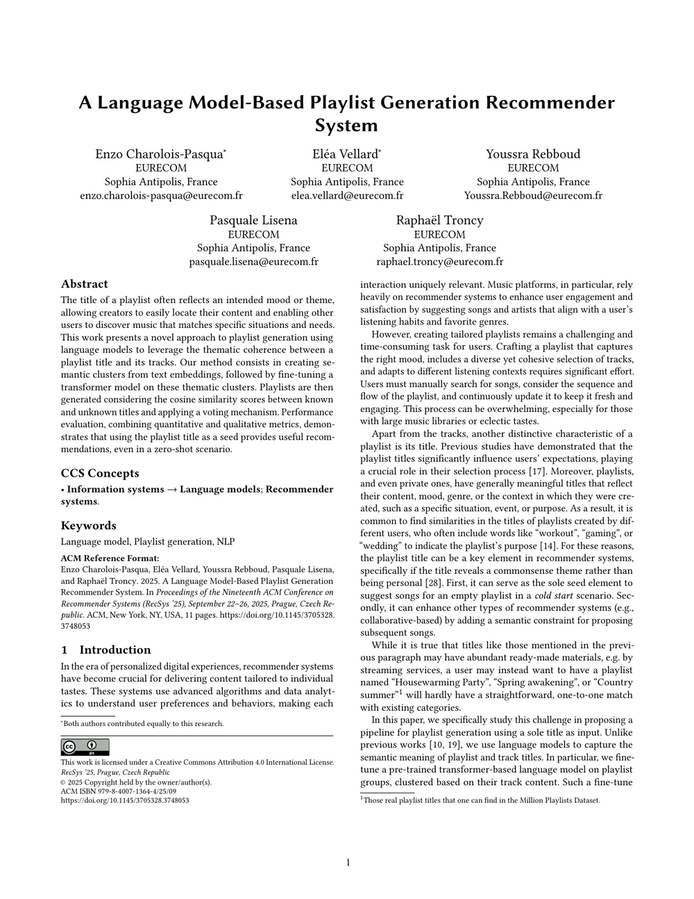

Recherche en IA
Un projet étudiant. Trois publications.
Mon premier projet de recherche a commencé à EURECOM. Avec mes coauteurs, nous avons cherché à recommander des morceaux à partir d’un titre de playlist. Nous avons publié deux articles à RecSys, puis un article de revue. J’ai poursuivi cette collaboration en parallèle de mon emploi à temps plein dans les technologies bancaires.

Publications
Playlist Generation from Titles: Transformers vs. Large Language Models
Enzo Charolois-Pasqua, Eléa Vellard, Youssra Rebboud, Pasquale Lisena, Raphaël Troncy
A Language Model-Based Playlist Generation Recommender System
Enzo Charolois-Pasqua, Eléa Vellard, Youssra Rebboud, Pasquale Lisena, Raphaël Troncy
Interactive Playlist Generation from Titles
Eléa Vellard, Enzo Charolois-Pasqua, Youssra Rebboud, Pasquale Lisena, Raphaël Troncy
Pour les deux articles de conférence, les deux premiers signataires ont contribué à parts égales.
Du titre aux morceaux
Nous avons regroupé les playlists selon leur contenu, puis affiné un transformeur sur ces groupes. Pour un nouveau titre, le modèle recherche les titres proches afin de proposer des morceaux. L’article de revue compare ensuite deux façons de les classer, par vote et par modèle de langage.
Essayer le prototype EURECOM